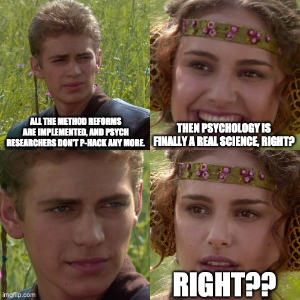
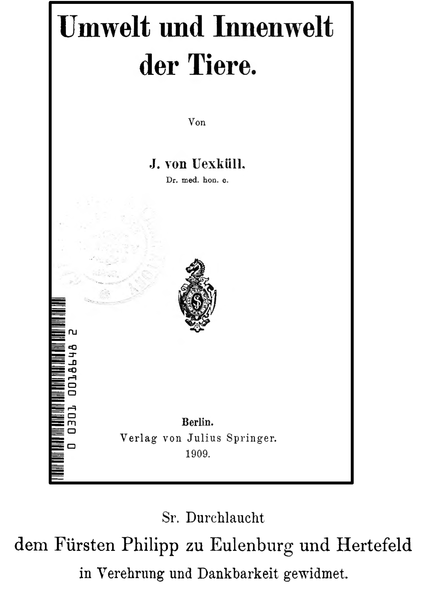
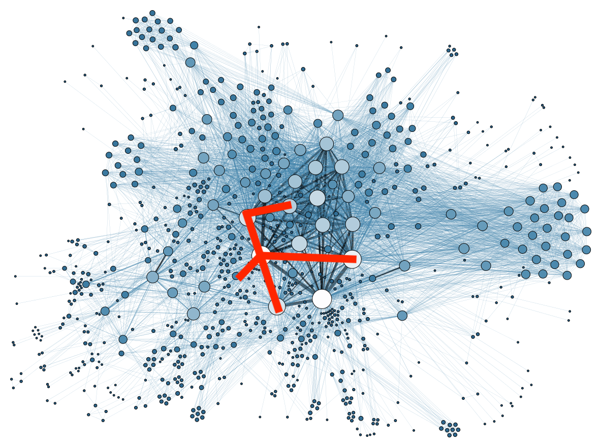
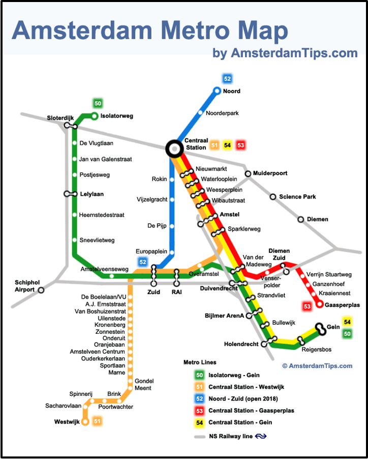

![]()
%%{ init: { 'flowchart': { 'curve': 'natural' } } }%%
flowchart LR
T(Theory)
P(Phenomena)
D(Data)
T -- "Explanation" --> P
P -- "Abduction" --> T
P -- "Prediction" --> D
D -- "Generalization" --> P
FOMO-Psy 1: Jingle jangle jungle, non-robust phenomena, and the theory crisis
Jinge Jangle Jungle
The Jingle-Jangle Problem
“Almost a century ago, it was remarked by a Professor Aikins that the science of psychology frequently manifests what he called ‘the jingle fallacy,’ a circumstance wherein two things that are quite different may be labeled equivalently, and thus the unwary may consider them interchangeable” (Block, 1995, p. 209)
The jangle fallacy: “two separate words or expressions covering in fact the same basic situation, but sounding different, as though they were in truth different” (Kelley, 1927, p. 64)
An Example for the Jingle Problem
Autonomy
” … at least three views of autonomy appear to be present in the current autonomy literature [and] autonomy measures are not assessing the same construct” (Hmel & Pincus, 2002)
- Autonomy\(_1\): A cognitive vulnerability associated with depression
- “… lacks the essential agentic core that would be necessary for an autonomy construct. […] it is inconsistent with conceptualizations of autonomy and in need of a label more consistent with its nature”
- Autonomy\(_2\): Self (auto) – governance (nomous)
- Autonomy\(_3\): Emphasis on interpersonal separation
All three are labeled “autonomy” in the literature!
An Example for the Jangle Problem
Grit = ???

“Grit is not only an excellent predictor of success and performance but also the secret to success” - Duckworth et al. (2007)
- Angela Duckworth’s speaking fee range is $100,000 or more
An Example for the Jangle Problem
Grit = Conscientiousness (Big 5 dimension)
- “the best available evidence strongly suggests that grit is largely a repackaging of conscientiousness — a widely studied personality trait” (Credé, 2018)
- “Given the long history of research on conscientiousness and the better measures of it (compared to scales frequently used to measure grit) we believe that it would be better to …
- stop measuring grit with the Grit-S questionnaire
- stop examining grit and rather continue to explore conscientiousness.” (paraphrased from Ponnock et al., 2020)
The Jingle-Jangle Problem
These jingle and jangle fallacies waste scientific time:
- Jingle creates confusion and unncessary dispute (“No, the true meaning of autonomy is …”).
- Jangle involves useless redundancies, that lead to the …
- reinvention of constructs under new labels
- decades of parallel literatures
- (To what extent) are two theories actually the same theory?
- → both slow down cumulative knowledge.
Group work (10 min.)
Collect candidates for the jingle and the jangle fallacy that you encountered during your studies.
Reminder
- Jingle = the same term for two (or more) distinct phenomena
- Jangle = different terms for the same underlying phenomenon
Data, phenomena,
and the replication crisis
The relation of theory, phenomena, and data
(We will discuss this model in detail in the next session)
The relation of data and phenomena
%%{ init: { 'flowchart': { 'curve': 'natural' } } }%%
flowchart LR
P(Phenomena)
D(Data)
P -- "Prediction" --> D
D -- "Generalization" --> P
Phenomena: Stable and general features of the world in need of explanation. Can be understood as robust generalizations of patterns in empirical data. They are the explanatory targets for scientific theories. In psychology often called “effects”.
Data: Relatively direct observations. Refer to particular empirical patterns in concrete data sets rather than empirical generalizations (which would be phenomenona). Also called a “finding”.
The relation of data and phenomena
Generalization
%%{ init: { 'flowchart': { 'curve': 'natural' } } }%%
flowchart LR
P(Phenomena)
D(Data)
P -- "Prediction" --> D
D -- "Generalization" --> P
linkStyle 1 stroke-width:2px,stroke:red,color:red;
Data provide evidence for the existence of empirical phenomena: You generalize from one or more data sets with strong evidence to a general phenomenon.
Generalize to what? UTOS framework:
- Units (i.e., sample characteristics): To which other types of tested units does it generalize?
- Treatments: Does it generalize to other operationalizations of the independent variable/treatment?
- Outcomes: Does it generalize to other operationalizations of the dependent variable/outcome?
- Settings: Does it generalize to other settings, e.g. lab vs. field, other countries?
The relation of data and phenomena
Generalization
%%{ init: { 'flowchart': { 'curve': 'natural' } } }%%
flowchart LR
P(Phenomena)
D(Data)
P -- "Prediction" --> D
D -- "Generalization" --> P
linkStyle 1 stroke-width:2px,stroke:red,color:red;
To claim a (robust) phenomenon, you ideally need:
- Independent replications with the same operationalizations (U, maybe S is varied): Often called “direct”, “exact”, or “close” replications
- Replications with different operationalizations (UTOS is varied): Often called “conceptual” replications
The relation of data and phenomena
%%{ init: { 'flowchart': { 'curve': 'natural' } } }%%
flowchart LR
P(Phenomena)
D(Data)
P -- "Prediction" --> D
D -- "Generalization" --> P
linkStyle 1 stroke-width:2px,stroke:red,color:red;
Probably most of psychological research is about establishing phenomena (disguised as “theories”).
Techniques used to detect data patterns:
- Factor analysis
- Principal components analysis
- Regression
- ANOVA
- …
The relation of data and phenomena
Prediction
%%{ init: { 'flowchart': { 'curve': 'natural' } } }%%
flowchart LR
P(Phenomena)
D(Data)
P -- "Prediction" --> D
D -- "Generalization" --> P
linkStyle 0 stroke-width:2px,stroke:red,color:red;
Phenomena (once their existence has been established) predict similar data patterns in new data sets of the same operationalization (as in “direct replication”) and ideally also for new operationalizations (as in “conceptual replication”, changing more UTOS dimensions).
Interlude: The risky shift phenomenon 1
The risky shift phenomenon: A group’s decisions are riskier than the average of the individual decisions of members before the group met (i.e., the group discussion made individuals riskier).
- Area of very active research in social psychology in the 1960s.
- “It could be easily replicated. Most of the replication studies […] employed the CDQ [Choice Dilemma Questionnaire] as their stimulus set, and they generally had no trouble obtaining the basic risky shift result.”
- Today we know that there is no risky shift. “It is now clear that the items contained in the original CDQ are in no sense a representative sample of the universe of all possible items. Instruments similar to the CDQ could readily be constructed whose scores would display risky shifts, cautious ones, or none at all” (Cartwright, 1971, p. 368).
- In the early risky shift literature, theoretical progress was unnecessarily impeded by multiple generations of replication studies (k ⋍ 200), nearly all relying on the same CQD questionnaire.
Interlude: The risky shift phenomenon 2
Questions for discussion (10 min.):
- Analyse the situation in the UTOS dimensions (units, treatments, outcomes, settings): To which dimensions did the successful replications (not) refer to?
- Is the “risky shift” effect - as demonstrated in the early publications - a phenomenon?
. . .
My take: It is a phenomenon (though a weak one), as it generalizes to new units (i.e., new participants) of the same operationalization. But the generalizability was much weaker than initially expected. It is a phenomenon of this specific stimulus set (outcome operationalization) and suggests certain types of research questions (e.g., “What is so specific to this stimulus set?”).
Replication crisis
Focus on phenomena
%%{ init: { 'flowchart': { 'curve': 'natural' } } }%%
flowchart LR
P(Phenomena)
D(Data)
P -- "Prediction" --> D
D -- "Generalization" --> P
The concerns of the replication crisis typically referred to the relation between data and phenomena:
- Does an empirical pattern even exist? (Or is it a false positive?)
- If we found a reproducible pattern with a specific operationalization: Is it generalizable (to other measures, other cultural contexts, other samples)?
- Do we even have a phenomenon in a particular research line? And how strongly should we belief in the existence of a phenomenon, given the empirical evidence?
Replication crisis
Focus on phenomena
%%{ init: { 'flowchart': { 'curve': 'natural' } } }%%
flowchart LR
T(Theory)
P(?? Phenomena ??)
D(Data)
T -- "Explanation" --> P
P -- "Abduction" --> T
P -- "??" --> D
D -. "?? Generalization ??" .-> P
linkStyle 2 stroke-width:0px,stroke:grey,color:grey;
linkStyle 3 stroke-width:2px,stroke:red,color:red;
Doubts about phenomena propagate to theories: If there is no phenomenon to explain, any explanatory theory gets obsolete.
From replication crisis to theory crisis
Reimagining psychology as a science

“Addressing the theory crisis in psychology”
%%{ init: { 'flowchart': { 'curve': 'natural' } } }%%
flowchart LR
T(Theory)
P(Phenomena)
D(Data)
T -- "Explanation" --> P
P -- "Abduction" --> T
P -- "Prediction" --> D
D -- "Generalization" --> P
“We argue that a further cause of poor replicability is the often weak logical link between theories and their empirical tests. […] A strong link between theories and hypotheses is best achieved by formalizing theories as computational models.”
“Many of these proposals [i.e., method reforms] are helpful ideas for raising the standards of good research practice, primarily ensuring more trustworthy inferences on the empirical level of scientific inference — the level connecting observations to empirical generalizations. Our concern is that shoring up the strength of inferences on the empirical level does not by itself address deficits on the theory level — the level connecting empirical generalizations to theories.”Oberauer & Lewandowsky (2019)
Summary and Outlook
Summary: Challenges to building useful theories in psychology
- Problems of theoretical precision of psychological constructs (jingle-jangle)
- Relative lack of robust phenomena that impose constraints on possible theories
- These two lead to problems of validity of psychological constructs (i.e., do they actually related to the real world?)
- Obstacles to discovering causal relationships between psychological variables
- Probably the most complex research object in the known universe …
- … and ridiculously small samples.
Outlook: How we will try to make it better …
- Learn to use the Visual Argument Structure Tool (VAST)
- Clear labels, that denote a precise latent construct.
- A consensus about the meaning of words helps to communicate within and beyond the scientific community.
- Conceptual precision increases its ability to be criticized
- Learn how to formalize verbal theories
- Mathematical models
- Agent-based models (ABMs)
- Simulate the models: Are they able to produce the phenomena we observe in the data?
- Practice with your own theory
“Der Wirklichkeit Gewalt antun”
“Der Wirklichkeit Gewalt antun”
“Die Wahrheit liegt in der uns umgebenden Wirklichkeit unmittelbar vor uns. Diese können wir aber unverändert nicht gebrauchen. Eine lückenlose Beschreibung der Wirklichkeit wäre zugleich das wahrste und unnützste Ding von der Welt und gewiß keine Wissenschaft. Wir müssen der Wirklichkeit und damit der Wahrheit Gewalt antun, wenn wir sie wissenschaftlich verwerten wollen. Wir müssen die Unterscheidung von wesentlich und unwesentlich einführen, die es in der ganzen Natur nicht gibt. In ihr ist alles gleich wesentlich. Indem wir die uns wesentlich erscheinenden Zusammenhänge aufsuchen, ordnen wir zugleich den Stoff übersichtlich. Dann treiben wir Wissenschaft.”
(von Uexküll, 1909, S. 58)

“Der Wirklichkeit Gewalt antun”

“Der Wirklichkeit Gewalt antun”

“Der Wirklichkeit Gewalt antun”
- We want to distill those concepts that are most useful to explain parts of the human psyche.
- (We will learn later what „explain“ means).
- These concepts are tools that guide our attention towards certain features, which we might not have seen before.
- They help us to organize our language and our reasoning about people.
The map and the territory

Let’s not confuse the map with the territory!
Korzybski warned against confusing our mental models of the world with the world itself, a mistake he believed was at the root of much human suffering.
The map and the territory
„A language is like a map; it is not the territory represented, but it may be a good map or a bad map. If the map shows a different structure from the territory represented […] then the map is worse than useless, as it misinforms and leads astray. One who made use of it could never be certain of reaching his destination.“ (Korzybski, 1933, p. 375)
Models vs Reality
All models are wrong, but some models are useful.
Useful (for a specific purpose), not true
“His design for a London underground railway was initially rejected as too revolutionary. Today, his idea has gained worldwide acceptance: Beck simplified the route (only horizontal, vertical and diagonal lines) and ignored exact distances.”

→ By omission of details (and making the map less realistic) the map got more useful!
Group work (10 min.)
How can we ensure that we do not create a purely self-referential system of symbols that does not refer to reality any more?
Of course we can play the mathematician’s game (and might have a lot of fun meanwhile). But ultimately, if we want to understand and explain the human psyche, we need to make sure that our constructs are grounded in reality.
How can this grounding happen?
End
Contact
- @nicebread@scicomm.xyz
- ed.uml.ysp@tdorbneohcs.xilef
- https://www.nicebread.de
- https://github.com/nicebread